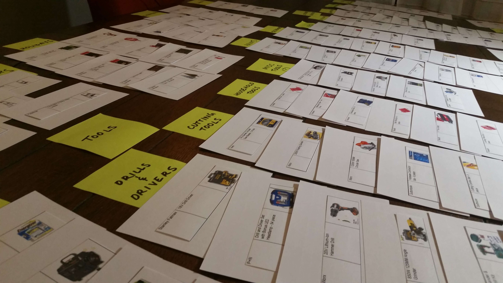
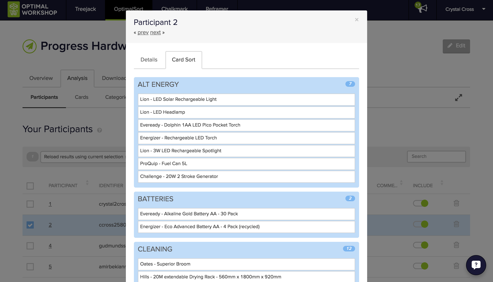
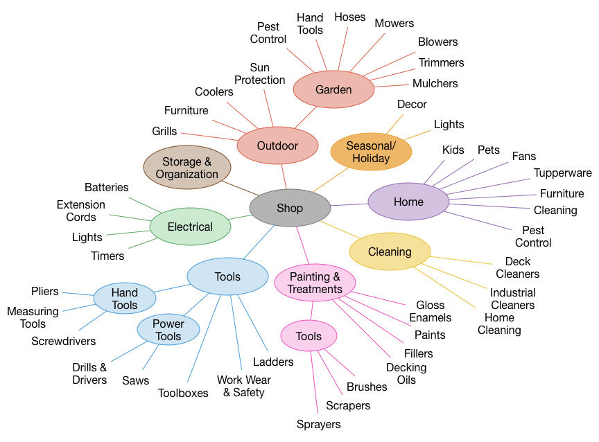
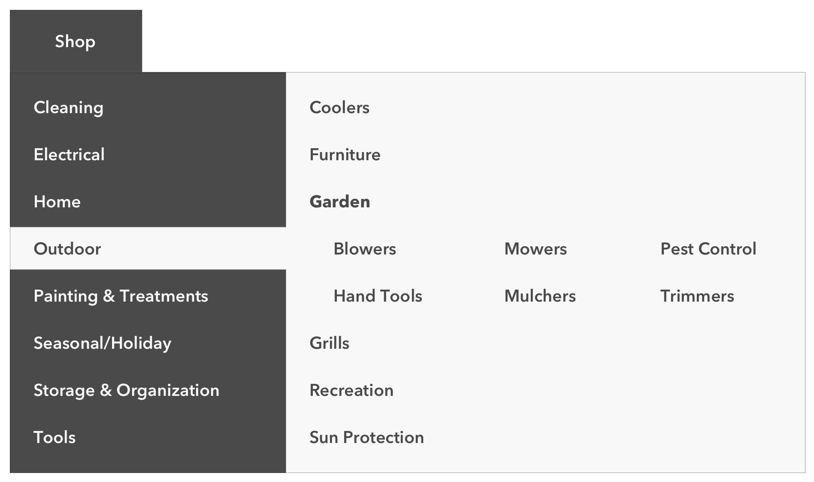
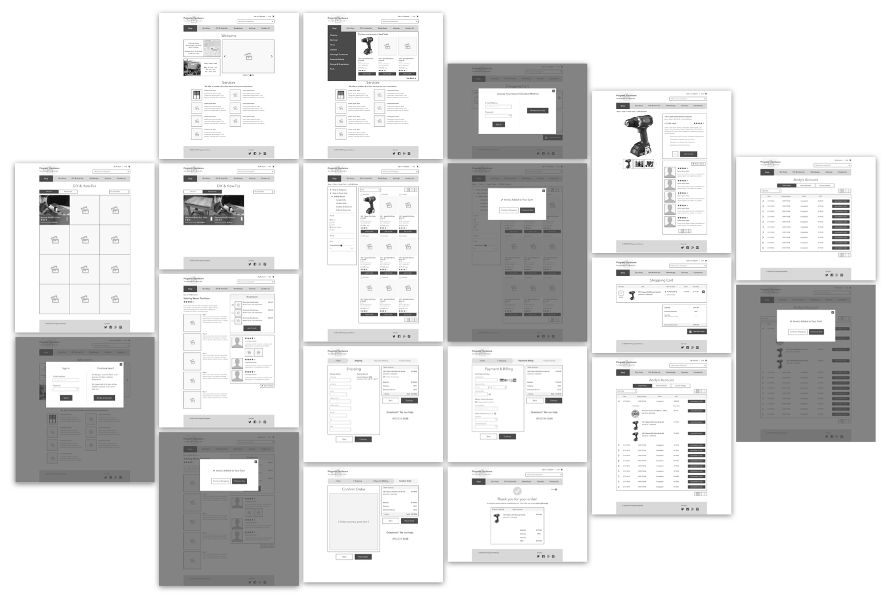

Progress Hardware
Translating an in-store experience to an e-commerce site
The Problem
Progress Hardware is a brick and mortar hardware store in the inner sunset neighborhood of San Francisco. Loyal customers keep coming back because of the store’s wide selection of hand-picked, quality merchandise, personalized customer service, and expertise in handy work. The ask was to design an e-commerce website that extends that in-store experience online.
The Process
Understanding Their Customers
Progress Hardware prides itself on their relationship with their customers. It was important to identify the main types of people who shop with them, what their needs are, and what they have come to expect from their shopping experience. Developed personas and user flows would be used to gut-check any design decisions made throughout the project.
User personas representing Progress Hardware’s typical customers.
Competitive and Comparative Analysis
It was important to survey the competitive and comparative site landscape to identify common e-commerce patterns and conventions. The average consumer does a lot of online shopping and seeing something different from what they’re used to can be a jarring user experience.
Information Architecture
Progress Hardware’s inventory varies significantly from other hardware stores; unlike a larger chain, they don’t carry 15 different brands and types of hammers, they might only carry 2 or 3. This meant that the product categories that might work for a Home Depot or Ace Hardware store would be ill-fitting for their site.
To determine product categories that would best suit Progress Hardware, I carried out open card sorting both physically and digitally, targeting participants who best matched Progress Hardware’s customer personas.

Although time consuming, physical card sorting allowed me to hear participants reason through their organization.

Digital card sorting yielded more responses, faster.
Card sorting revealed patterns in how people group a list of Progress Hardware’s most popular products, and the consistencies across the results helped shape the final organizational model of products.


Final organization model of products in a navigational dropdown.
The Solution
My design for Progress Hardware allows users different ways of shopping based on the needs of their typical customers. The solution incorporates not just traditional product browsing but also shopping using a product list from a DIY project and reordering products from a previous purchase.
The design also features a streamlined checkout flow and maintains the same community feel as its storefront with ties to the physical store (address, number, and hours) clearly listed on the homepage.
Wireframes and Clickable Prototype

Greyscale wireframes developed in Sketch.
Next Steps
- Additional user testing to evaluate ease of navigation and site flows
- Explore DIY content strategy options with stakeholders
- Produce a high fidelity prototype